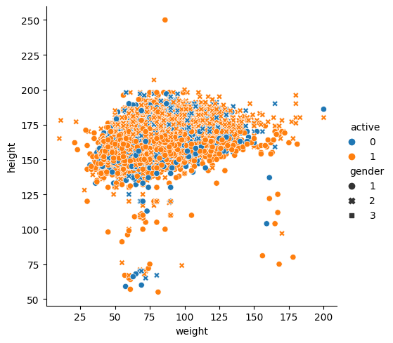
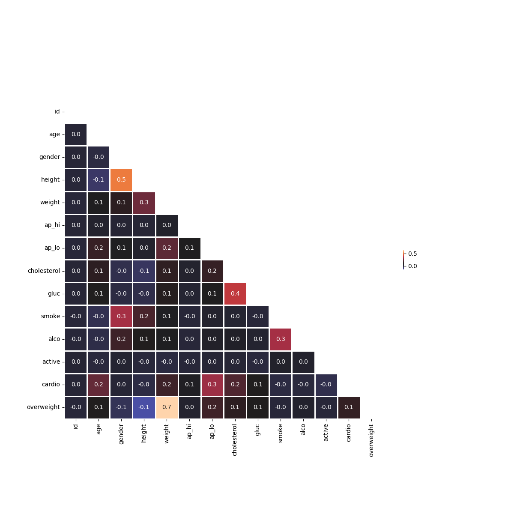
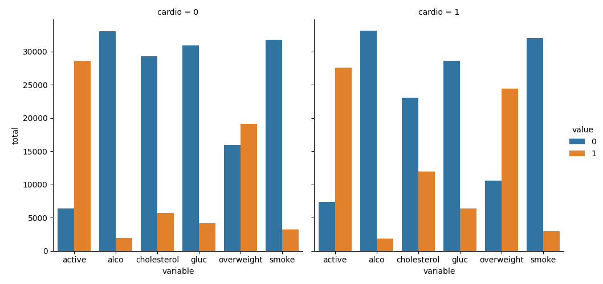
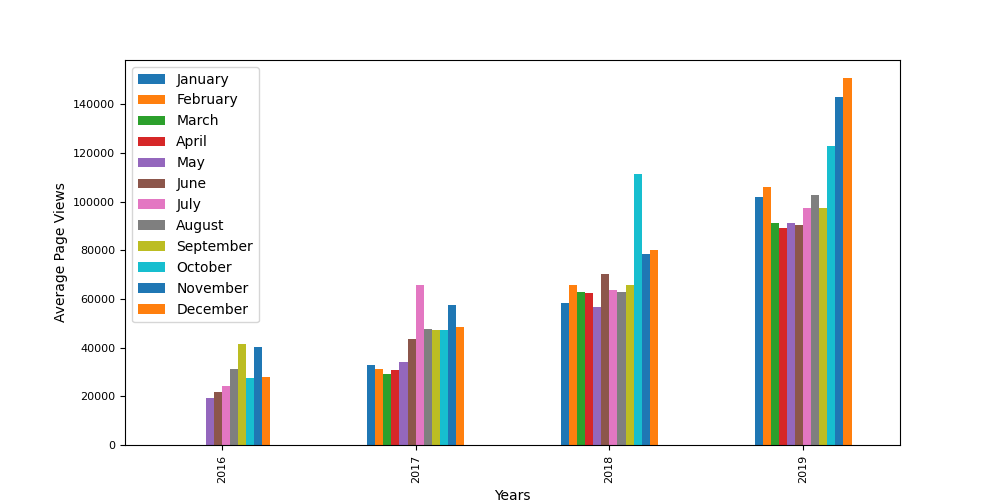
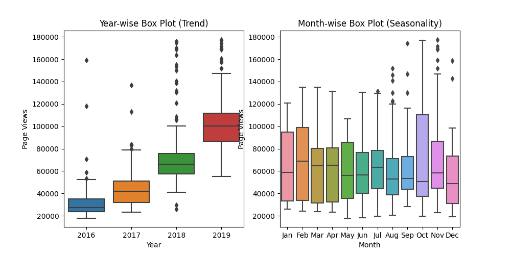
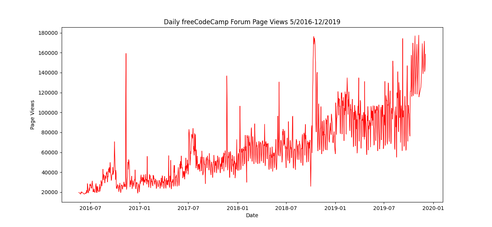

In this project, I have made calculations and visualize data as a Scatterplot, the medical examination data using matplotlib, seaborn, and pandas. The dataset values were collected during medical examinations of 70,000 different individuals.


In this project, I have made calculations and visualize data as a Heatmap, the medical examination data using matplotlib, seaborn, and pandas. The dataset values were collected during medical examinations of 70,000 different individuals.

In this project, I have made calculations and visualize data as a Catplot, the medical examination data using matplotlib, seaborn, and pandas. The dataset values were collected during medical examinations of 70,000 different individuals.

This project visualize time series data using a bar chart. Pandas, Matplotlib, and Seaborn was used to visualize dataset containing the number of page views each day on the freeCodeCamp.org forum from 2016-05-09 to 2019-12-03. The data visualizations helps understand the patterns in visits and identify yearly and monthly growth of the freeCodeCamp.org forum.

This project visualize time series data using a box chart. Pandas, Matplotlib, and Seaborn was used to visualize dataset containing the number of page views each day on the freeCodeCamp.org forum from 2016-05-09 to 2019-12-03. The data visualizations helps understand the patterns in visits and identify yearly and monthly growth of the freeCodeCamp.org forum.

This project visualize time series data using a line graph. Pandas, Matplotlib, and Seaborn was used to visualize dataset containing the number of page views each day on the freeCodeCamp.org forum from 2016-05-09 to 2019-12-03. The data visualizations helps understand the patterns in visits and identify yearly and monthly growth of the freeCodeCamp.org forum.